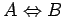
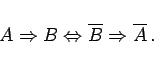
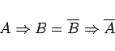
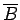
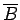
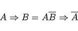
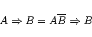
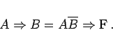

Ein aussagenlogischer Ausdruck heißt allgemeingültig oder Tautologie, wenn er die Wahrheitsfunktion identisch W repräsentiert. Folglich sind zwei Ausdrücke A und B genau dann logisch äquivalent, wenn der Ausdruck  eine Tautologie ist. Mathematische Schlußweisen folgen aussagenlogischen Gesetzen. Als Beispiel sei das Kontrapositionsgesetz genannt, d.h. der allgemeingültige Ausdruck
|  | (5.19a) |
Dieses Gesetz, das auch in der Form
|  | (5.19b) |
notiert werden kann, läßt sich wie folgt interpretieren: Um zu zeigen, daß B aus A folgt, kann man auch zeigen, daß  aus  folgt. Der indirekte Beweis beruht auf folgendem Prinzip: Um B aus A zu folgern, nimmt man B als falsch an und leitet daraus - unter der Voraussetzung, daß A richtig ist - einen Widerspruch her. Formal läßt sich dieses Prinzip auf verschiedene Weise durch aussagenlogische Gesetze beschreiben:
aus  folgt. Der indirekte Beweis beruht auf folgendem Prinzip: Um B aus A zu folgern, nimmt man B als falsch an und leitet daraus - unter der Voraussetzung, daß A richtig ist - einen Widerspruch her. Formal läßt sich dieses Prinzip auf verschiedene Weise durch aussagenlogische Gesetze beschreiben:
|  | (5.20a) |
oder
|  | (5.20b) |
oder
|  | (5.20c) |